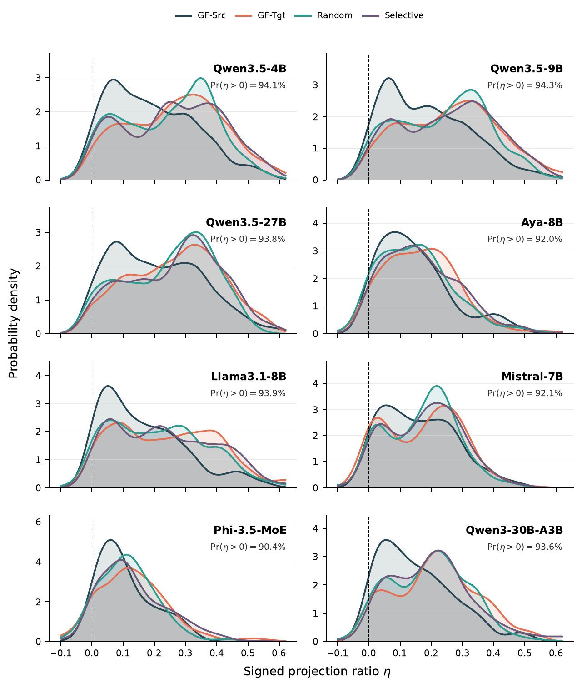
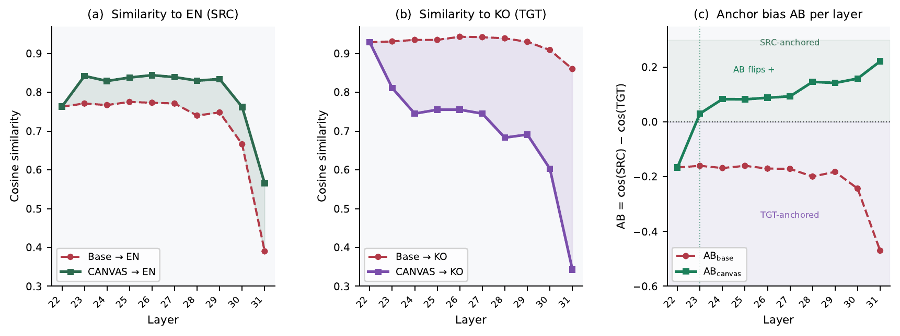

Why inspect code-switched representations?
Multilingual LLMs can answer monolingual questions yet degrade when the same information need is expressed through structured code-switching. Answer scores alone do not explain whether the model preserves a source-language processing path, shifts toward a target-language path, or lands in an unstable intermediate region. We therefore compare each code-switched hidden state against matched source and target monolingual anchors.
Controlled comparison
For each factual question, we compare source-only, target-only, source-framed CS, and target-framed CS variants. Grammar-forced CS keeps the information need fixed while changing the language that organizes the mixed utterance.
Actionable signal
Anchor Bias measures which monolingual side the CS representation approaches. CANVAS uses the same internal signal at inference time, without rewriting the input or updating model weights.
Code-switched inputs follow the grammatical frame.
Anchor Bias compares the similarity of a CS question representation to its matched source and target references. Positive values indicate source-oriented representations; negative values indicate target-oriented representations.
GF-SRC
Mean upper-layer anchor bias is +0.246, indicating a source-oriented internal state.
GF-TGT
Mean upper-layer anchor bias is -0.320, indicating a target-ward representation shift.
QA behavior
More source-oriented anchor bias corresponds to smaller QA degradation across model-condition pairs.

CANVAS aligns target-token states toward an in-context source canvas.
CANVAS is an inference-time hidden-state intervention. It computes source and target anchors from the same CS input, estimates whether the mixed state is target-oriented, and softly interpolates only target-language token states toward the source canvas during prefill.
Token partition
Split the user question span into source, target, and neutral tokens.
Source canvas
Mean-pool source-token states in upper layers to form a layer-specific canvas.
Adaptive strength
Use the internal alignment score to increase steering for target-oriented inputs.
Online interpolation
Modify target-token hidden states during prefill, then decode from the adjusted cache.
CANVAS improves CS QA across model families.
We compare direct CS answering (Base), a random-direction control with the same intervention budget (Rand), and the full adaptive CANVAS method (Adapt). Condition-wise columns report Adapt minus Base F1.
| Model | Base | Rand | Adapt | GF-SRC | GF-TGT | Random | Selective |
|---|---|---|---|---|---|---|---|
| Llama3.2-1B | 2.57 | 2.68 | 3.20** | +0.08 | +0.82 | +1.01 | +0.62 |
| Mistral-7B | 4.53 | 4.96 | 5.06** | +0.14 | +0.80 | +0.65 | +0.55 |
| Aya-Expanse-8B | 5.99 | 5.99 | 6.88** | +0.62 | +1.41 | +0.63 | +0.91 |
| Llama3.1-8B | 6.21 | 6.72 | 7.79** | +1.21 | +0.64 | +2.15 | +2.34 |
| Mixtral-8x7B | 6.77 | 6.82 | 6.91 | +0.16 | +0.29 | +0.38 | -0.29 |
| Qwen3-30B-A3B | 6.91 | 6.93 | 8.11** | +0.06 | +2.48 | +0.71 | +1.55 |
| Qwen3.5-4B | 7.58 | 7.35 | 8.14** | +0.37 | +0.70 | +0.33 | +0.86 |
| Phi-3.5-MoE | 7.99 | 7.93 | 8.82** | +0.12 | +1.31 | +0.61 | +1.26 |
| Qwen3.5-9B | 9.89 | 10.01 | 10.24* | -0.20 | +0.77 | +0.22 | +0.61 |
| Llama3.1-70B | 12.89 | 12.98 | 13.20 | -0.52 | +0.67 | +0.73 | +0.35 |
| Llama3.3-70B | 12.96 | 13.27 | 13.61* | +0.29 | +1.66 | +0.61 | +0.04 |
| Qwen3.5-27B | 14.14 | 14.22 | 15.40** | +0.28 | +1.74 | +0.96 | +2.03 |
| Qwen3.6-35B-A3B | 15.80 | 16.07 | 17.53** | +0.66 | +3.58 | +1.41 | +1.28 |
Stars denote model-level overall Adapt-Base paired tests with BH-FDR correction across model-level tests.
The intervention moves representations in the intended direction.
CANVAS is not just a score-level intervention. Representation analyses show that the update usually projects positively along the source-target anchor axis and that the adaptive coefficient increases for more target-heavy inputs.




Beyond single-turn closed-book QA.
We also evaluate Llama-3.1-8B in retrieval-augmented and dialog settings. Retrieval tests whether gains remain when the model receives external evidence, reducing dependence on parametric recall alone.
| Dataset | Task | Retrieval | Metric | Items | Base | CANVAS | Delta |
|---|---|---|---|---|---|---|---|
| CodeMixQA | Short-answer QA | K=0 | Token F1 | 2880 | 5.81 | 7.51 | +1.70 |
| CodeMixQA | Retrieval-augmented QA | K=1 | Token F1 | 2880 | 19.71 | 20.60 | +0.89 |
| PingPong | Multi-turn dialog QA | K=0 | Accuracy | 1683 | 47.89 | 50.51 | +2.61 |
| PingPong | Retrieval-augmented dialog QA | K=1 | Accuracy | 1683 | 44.86 | 46.64 | +1.78 |
| PingPong | Topic classification | -- | Accuracy | 396 | 49.75 | 51.26 | +1.52 |
BibTeX
Citation metadata will be updated when the paper is public.
@misc{park2026canvas,
title = {Code-Switching Reveals Language Anchoring in Multilingual LLMs},
author = {Park, Jeonghyun and Yoon, Seunghyun and Jun, Yonghyun and Lee, Hwanhee},
year = {2026},
note = {Manuscript under review}
}